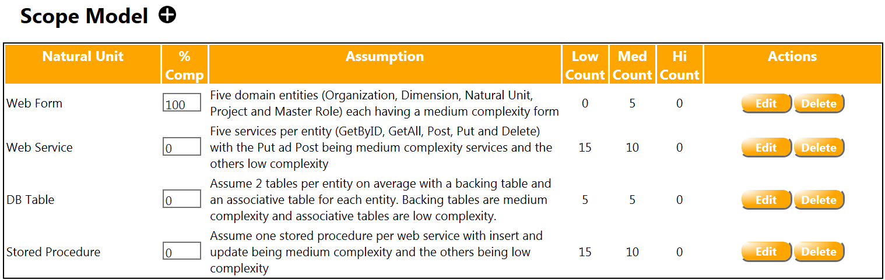

Define your engineering process
Identify the Natural Units and Organizations for your company.
The starting point to rolling out MB2E in your company is defining the natural units of your development organization. These are the standard deliverable elements that comprise the applications you develop. At the same time you are identifying and documenting your natural units you are determining the number of organizations in your company. Remember organizations are not a reflection of the organizational structure of your company. They represent a collection of projects with shared development methodologies, architectural patterns and technology.
Natural Units should consist of standard deliverable items which are visible to the customer and represent typical effort ranges of a few hours to a few days. Typical examples of Natural Units include things like:
-
Web Form
-
Custom Mobile Control
-
Client Form
-
Web Service
-
Driver
-
Illustration
-
Document
Enumerate the natural units and identify the projects which produce those standard items. If you find that different projects produce different subsets of the deliverables then you probably have multiple organizations. Additionally, consider the relative complexity of the deliverables. If you see different projects typically encountering different levels of complexity or effort when implementing the natural units these may also represent different organizations.
Identify the roles that participate in your typical projects
These represent the standard types of resource that have responsibilities on your projects. A role represents a collection of individuals who share responsibility for the same types of activities and deliverables and are largely interchangeable in their role (allowing for problem domain area training). Typical roles include things like:
-
Project Manager
-
Software Developer
-
Software Tester
-
Graphic Designer
-
Usability Engineer
-
Localization Engineer
Gather historical productivity data for your natural units.
Identify the subset of roles that are engaged on each natural unit and collect historical data about the effort required by each role to produce a standard deliverable. This data can be generated from a time tracking system when you have one or from individual interviews. When using interviews it is best to attempt to collect estimates for the effort required to produce a set of deliverables and to use that data to generate average numbers.
Identify the work dimensions that your organization want to track.
This can be represented by a single dimension for each functional category like graphical design, implementation and validation. Alternatively you can define dimensions based on a business need in your engineering process like billable and non-billable effort. Most organizations will typically model this along functional lines and dimensions will map closely to roles.
Application Setup
This section describes application setup using the administration forms. An alternative quick strt method is to use the Project Team Wizard to perform initial configuration and then customize the setup per these instructions. The wizard is documented in the Reference Manual.
Once you have completed the basic information gathering steps above you are ready to configure your company in PMMODA. The steps below outline what needs to be done and the basic sequence that should be followed. Permission requirements are defined below and these activities may be completed by different individuals.
This document outlines the basic steps to be taken and the logical sequence in which to execute those steps. More detailed instructions about each form mentioned are available in the Reference Guide accessible under the application help dialog on the main menu.
Verify your company data.
Permission level – Company Admin
The Company Management screen can be accessed via the menu option Administration=>Application Admin=>Manage Company. Verify the company primary contact information. This individual has been established in the system as a Company Admin with full permission for all activities within the PMMODA system. Ensure that the email address is correct since this is the alias that will be used to send new account information. Select the “Enforce Restricted Organizations” option if you want to enforce organization specific authorization. If all users within your company can see and work on any organization then leave this option unchecked.
Define your Master Roles.
Permission Level – Company Admin
The Master Role Management form can be accessed via the menu option Administration=>Application Admin=>Manage Master Roles. Master Roles are defined for each company and represent the set of roles which can be applied to an Organization. Create a record for each desired role using this form. Type the name of the desired role in the "Role" text box and hit the "Add" button. You will see the new role appear in the "Master Roles" list box. Close the screen when you have created all desired master Roles.
Create organization records (including roles and standard overheads)
Permission Level – Company Admin
The Organization Management screen can be accessed via the menu option Administration=>Organization Admin=>Manage Organizations. Select [Add New Organization] from the Organization combo box and specify the name and description. Save the organization and update it to specify the applicable roles. Note that the organization is created with the default “Team Member” role enabled and this should be disabled if you select alternative roles. Also complete the overhead figure for each role. This number represents the percentage of time (expressed as a decimal fraction or a percentage between 0 and 100). The appropriate overhead rating can be calculated using the Overhead Calculator provided on the TruNBE website. There is a link to this tool on the Organization form.
Request any additional user accounts
At this time you should have an understanding of the list of individuals who need to use the system. Contact TruNBE concerning any additional accounts which are required.
Configure user permissions
Permission Level – Company Admin
The Permission Management screen can be accessed via the Administration=>Application Admin=>Manage Permissions. If you selected the “Enforce Restricted Organizations” the form will contain a combo box to specify the current organization. IF this flag was not selected then this control will not be present. This form will include an entry for each defined user belonging to this company and show their current permissions. Everyone will be created with “Company Permissions” and the primary company contact will have “Company Admin” permissions. Additional permissions should be assigned to the staff by clicking in the desired permission category for a user row. In order to select “Organization Admin” or “Organization Member” you will have to select the target organization. It is suggested that most users be granted “Organization Member” status and that you minimize the number of administrators to prevent undesired modifications to your organization model configuration. Note that users will need to log out and log back in for permissions changes to take effect.
Define the dimensions for each organization
Permission Level – Company Admin or Organization Admin
The Dimension Management screen can be accessed via the menu option Administration=>Organization Admin=>Manage Dimensions. Create an entry for each desired Dimension specifying the name, the corresponding role and the description for each dimension. Use the “Default” role when you are not defining additional roles for your organization.
Define the Natural Units for each Organization
Permission Level – Company Admin or Organization Admin
The Natural Unit screen can be accessed via the menu option Administration=>Organization Admin=>Manage Dimensions. Select the target Organization and create a record for each desired Natural Unit. Specify the name and description for the new unit and check the applicable dimensions for each unit.
Define Project records for the current activity
Permission Level – Company Admin or Organization Admin
The Project screen can be accessed via the menu option Administration=>Organization Admin=>Manage Projects. Select the desired Organization and create a new project record for each current project. Specify the Name, Description and Purpose for each project and save the record. Select the new project record and enter the staffing count for each applicable Role. This staffing count will be used in the timeline view to calculate possible timelines for the current project.
Define a Productivity Model for each Organization
Permission Level – Organization Member
Select the desired organization from the Organization combo box on the main menu bar and then select the Productivity Model menu option. Remember that the productivity model is defined only once per organization and shared by all projects defined for that organization. You will see a Natural Summary View like the one shown in Figure 1 below. This view will have a single row for each defined natural unit.

Figure 1: Sample Natural Unit Summary View
Additionally you will see a blank Productivity Model view at the bottom of the page like the one seen in Figure 2.

Figure 2: Blank Productivity Model View
Click the desired natural unit and the productivity model will be populated with a single row for each dimension defined on the current natural unit. Click the edit button and enter the typical effort (in hours) for a low, medium and high complexity instance of the current natural unit – dimension pair. Typically, this will mean entering the role specific effort associate with a particular natural unit. This might be the average effort to defined and document the functional behavior of a Web Form by a PM. Alternatively, it might be the effort by a developer required to implement that same Web Form. Where your organization defines a single dimension and does not recognize roles, it is the aggregate effort for all associated activity required to completely finish the deliverable under question.
Define a Work Breakdown Structure
Permission Level – Organization Member
Select the desired project on the main menu Project Combo box and click the Effort Model menu option. Remember that an effort model must be defined for each project. The system will display a blank Work Breakdown Structure (WBS) view like that shown in Figure 3 below.

Figure 3: Blank Work Breakdown Structure
The view will include a default root deliverable which is created automatically by the system. Each row contains the name of the deliverable, a concise description for the deliverable and a cross reference field which can contain a reference to any arbitrary requirements of design documentation that you might use. The “Total Effort” and “Effort Remaining” fields are calculated by the system. In order to add a new deliverable click the “+” symbol in the second column. The system will manage a new editable row in the table and you should fill in this data and save the record. You can define an arbitrary depth hierarchy of deliverables in this view as required to model your planned project. Note that Scope models can only be defined on leaf node entries in the WBS. That means that once you cannot create a scope model for a deliverable node with children and once you create a scope model for a deliverable you cannot add any children to that node. The collection of children must span the entire parent functionality.
Define a Scope Model for the current WB
In order to define a scope model for a deliverable highlight the desired row by clicking that row. The desired row will be highlighted and you can then click the “+” symbol to the right of the Scope Model label in the Scope Model view.

Figure 4: Scope Model View
This will cause a blank row to be added to the Scope Model view as shown above in Figure 4. Select an applicable Natural Unit, document you basic scope assumptions and enter the low, medium and high complexity counts. The scope assumption should consist of a brief justification of your estimate and provide sufficient information for an informed reader to understand why you selected the distribution of counts which you did. For example, it might say something like:
“Create a low complexity, basic administration screen for each of 5 business entities {customer, user, location, transportation Mode, Vendor}. Each of these forms will need to accommodate approximately 5-10 meta-data attributes.”
Complete this process for each applicable natural unit for the current deliverable.
At this time the effort summary graphs will be filled and you can access the Timeline View to see information about the probable timeline for your projects.